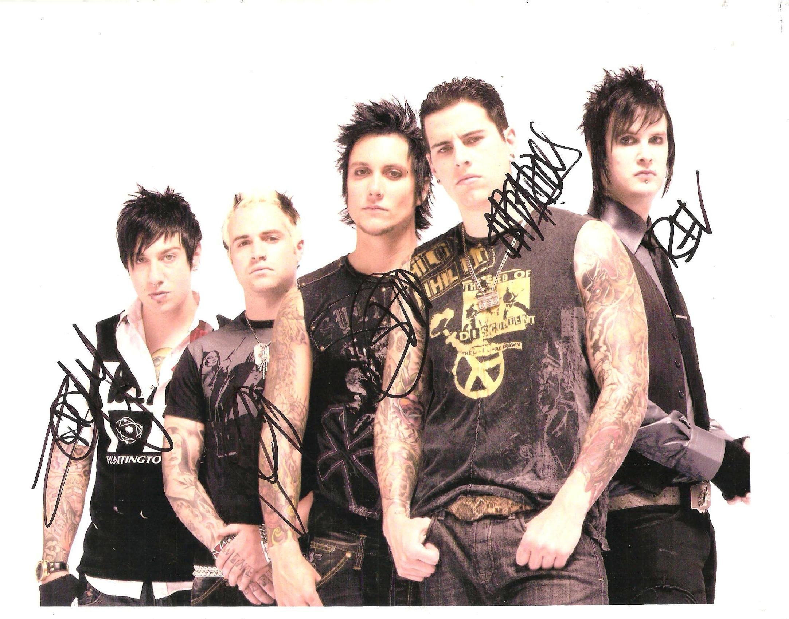

Sobre a Banda
Avenged Sevenfold (também conhecida como A7X) é uma banda americana de heavy metal formada em Huntington Beach, Califórnia, em 1999.
Uma Trajetória Única
O Avenged Sevenfold se destaca por sua constante evolução musical. Começando no metalcore pesado nos anos 2000, a banda se reinventou incorporando influências de hard rock, metal progressivo e arranjos orquestrais complexos. Mesmo após a trágica perda do baterista fundador Jimmy "The Rev" Sullivan, a banda manteve seu legado vivo com o apoio dos fãs e continua sendo um dos maiores nomes do rock mundial moderno.
Legado de Jimmy "The Rev" Sullivan
Jimmy "The Rev" Sullivan foi o baterista cofundador, compositor e vocalista de apoio da banda. Conhecido por seu talento genial na bateria, vocais marcantes e criatividade única em faixas como "A Little Piece of Heaven", The Rev faleceu em dezembro de 2009. Seu legado e sua essência continuam sendo a alma do Avenged Sevenfold e são homenageados pela banda em todos os shows e álbuns posteriores.

Membros Principais
- M. Shadows - Vocal
- Synyster Gates - Guitarra Solo
- Zacky Vengeance - Guitarra Base
- Johnny Christ - Baixo
- Brooks Wackerman - Bateria
Discografia Principal
City of Evil (2005)
Álbum que consagrou a banda mundialmente, com sucessos como Bat Country e Seize the Day.
Avenged Sevenfold (2007)
Álbum homônimo auto-produzido, trazendo faixas marcantes como Afterlife e A Little Piece of Heaven.
Nightmare (2010)
Álbum gravado em homenagem ao falecido baterista The Rev, com participação de Mike Portnoy.
Hail to the King (2013)
Álbum com sonoridade inspirada no heavy metal clássico dos anos 80.